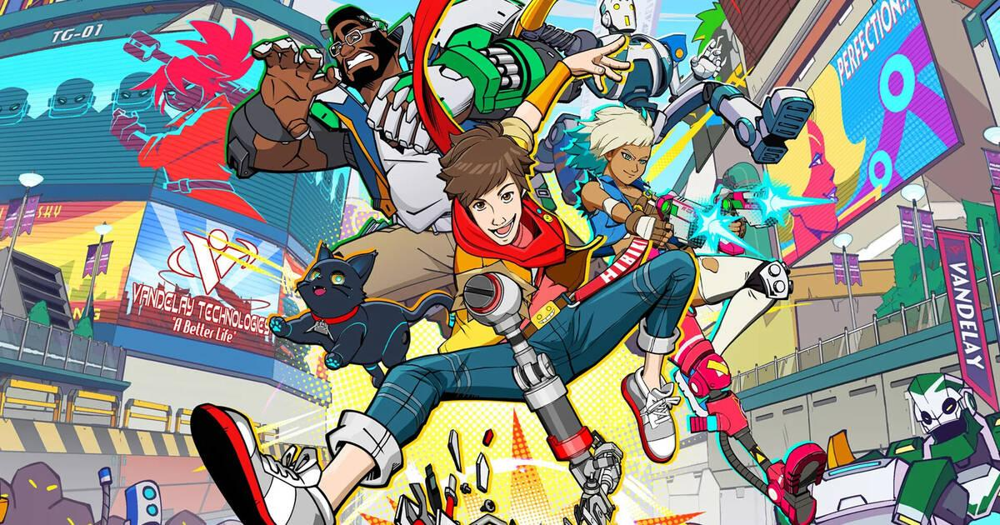

Hi-Fi RUSH debutó con éxito y está entre los más vendidos de Steam
Ene 26, 2023
El videojuego de Tango Gameworks fue una grata sorpresa del Developer Direct de Xbox
El Developer_Direct de Xbox dejó una muy buena impresión con anuncios importantes sobre los títulos que están en camino este año por parte de Xbox Game Studios y también hubo oportunidad para un lanzamiento sorpresa. Tango Gameworks, estudio de Shinji Mikami, reveló Hi-Fi RUSH, un juego de acción, combate y ritmo que encantó a los jugadores y más porque estuvo disponible de inmediato. La buena racha sigue y el título se colocó entre los más vendidos en Steam.
La presentación de Hi-Fi RUSH fue un éxito pues la comunidad quedó sorprendida con la decisión de Bethesda y Tango Gameworks de mantener el juego en secreto para revelarlo en el evento y lanzarlo momentos después de finalizada la transmisión. Bastaron unas cuantas horas para que los jugadores se volcaran hacia las plataformas en que debutó y mientras algunos lo disfrutaron gracias a Xbox Game Pass, otros lo hicieron desde Steam comprando el título y esto se vio reflejado en su ascenso inmediato.
A unas horas de su lanzamiento, Hi-Fi RUSH se colocó en el Top 10 de los juegos más vendidos de Steam gracias a la sorpresa que generó y a la buena recepción que tuvo entre los jugadores. Su estilo caricaturesco y su propuesta de acción con combate rítmico acompañado de un soundtrack a la altura fueron suficientes para convencer a los usuarios y convertirlo en una tendencia. En este momento, Hi-Fi RUSH se encuentra en el #7 de los videojuegos más vendidos en Steam codeándose con los títulos del momento y ganándose a pulso ese lugar.